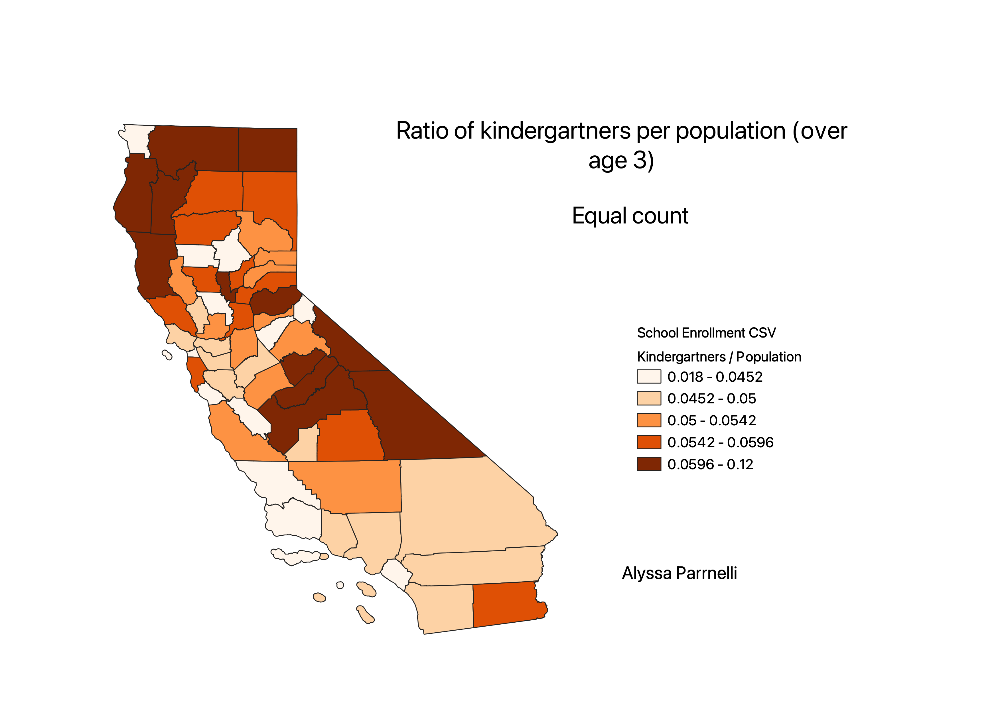

Homework 6b: Census data ratios and categories
Alyssa Parrnelli
Original Count Choropleth (Natural Breaks)
Ratio Choropleth (Natural Breaks)
Ratio Choropleth (Equal Count)

Ratio Choropleth (Equal Interval)
Ratio
The ratio I used to create these choropleths was the number of kindergartners enrolled in each county
divided by the total population of people over the age of 3 in that county. This ratio shows very different results
from the original count choropleth. In some counties, there were very few kindergartners enrolled, but that number was actually a
higher proportion of the county than in some others.
Classification Schemes
The three classification schemes I used are natural breaks, equal count, and equal interval.
Natural breaks creates boundaries where there are big differences in data values. They are more helpful more data-specific classifications.
Equal count (quantile) means that each class contains an equal number of features. It is good for linear data but can be misleading.
Equal interval creates equal-sized sections. This is often good for familiar data ranges and values in relation to other values.
*Note*
I had to use new data for this part because I used mean income for part 1, so I could not make a ratio.